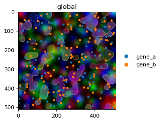

Tutorials#
Entry-point material for learning the API on synthetic data.

Getting started
The fluent .pl API, layering, and styling on the in-memory blobs
dataset. Ideal first read.

Colour and palettes
How color= resolves, the v0.3.0 groups behaviour, and building
perceptually well-spaced or colourblind-safe palettes with
make_palette and make_palette_from_data.